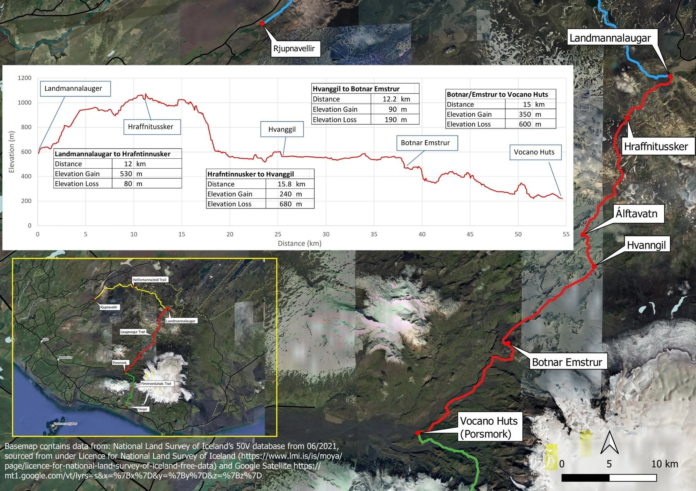
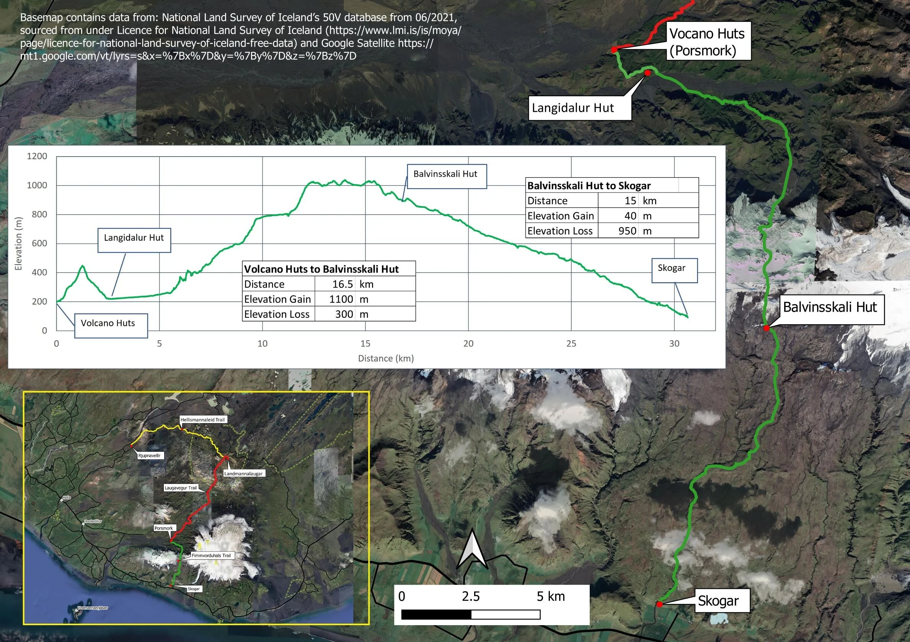
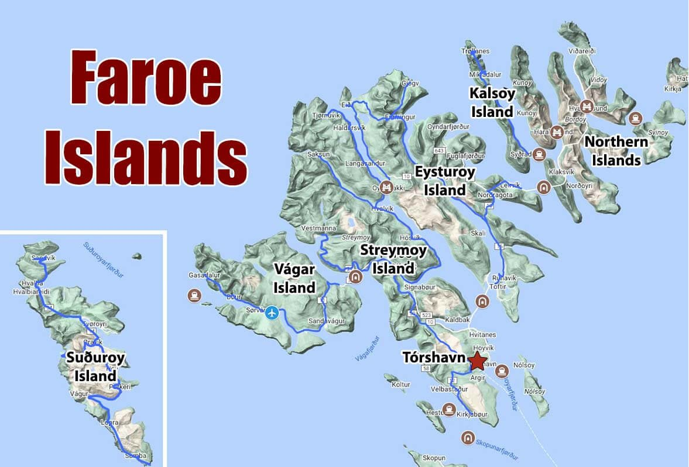
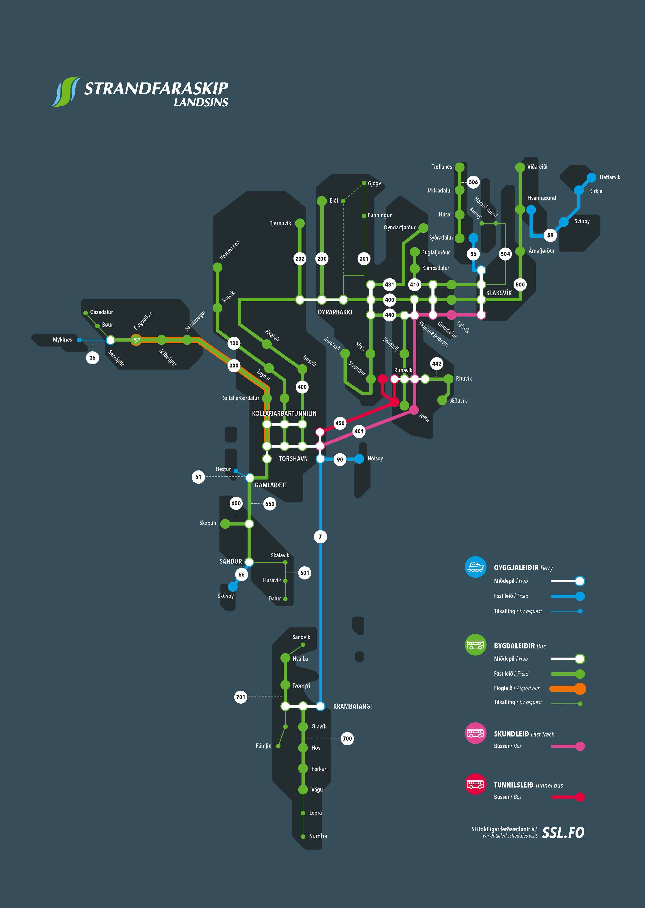

洛蒙湖（Loch Lomond）英國最大淡水湖；高地清空（Highland Clearances）18世紀農民被迫遷離；傑科拜特起義（1745年）卡洛登戰役後蓋爾文化大滅絕。
🍺 必吃：Haggis 雜碎布丁 · Irn-Bru 橙色汽水 · 單一麥芽威士忌
蘇格蘭第一條官方長距離步道（1980年），全長 154 km，從 Milngavie 至 Fort William。此行走最精彩的核心段：Bridge of Orchy → Kingshouse → Kinlochleven，翻越全線最高點魔鬼階梯（539m）。
| 8/14五 | Balmaha → Conic Hill 往返 7.8 km · +361 m · 2.5–3h 湖島全景 · 高地斷層線 |
| 8/15六 | Bridge of Orchy → Kingshouse 19 km · +350 m · 5–6h 拉諾克荒原 · 全程最長 |
| 8/16日 | Kingshouse → Kinlochleven 14.5 km · +500 m · 4–5h 魔鬼階梯 539m · 全線最高 |
💡 Loch ch 唸喉音 /kh/（類德語 Bach），不是 /k/。
| 業者 | 出發 | 抵達 |
|---|---|---|
| Citylink 914 | 06:40 | 08:37 |
| Ember E5 | 08:00 | 09:44 |
| Citylink 915 | 08:50 | 10:37 |
深夜桃園起飛，在杜拜（Dubai）轉機後飛抵格拉斯哥，搭機場巴士進市中心。
行李寄放後前往 Balmaha（巴爾馬哈）健行 Conic Hill（科尼克山）來回 7.8km，爬升 361m。山頂俯瞰洛蒙湖（Loch Lomond）全景。
穿越廣袤的 Rannoch Moor（拉諾克荒原）——英國最荒涼高沼地，面積 130km²。19 km · 5–6h · 爬升 350m
翻越 Devil's Staircase（魔鬼階梯，539m）全線最高點，Glencoe 峽谷盡收眼底。下山至 Kinlochleven 搭巴士。14.5 km · 4–5h
Glenfinnan Viaduct（格蘭芬南高架橋）建於 1901 年，21座拱橋，《哈利波特》霍格華茲列車取景地。Glenfinnan Monument 為 1745 年傑科拜特起義紀念碑。
搭火車至英國最偏遠有人車站 Corrour（科勞爾）——四周無公路。步行 1.5km 抵達太陽能供電的 Loch Ossian Youth Hostel，翡翠色湖水倒映群山。
搭火車返抵格拉斯哥，取回 8/14 寄放的大行李，洗烘衣物，明日飛冰島。
冰島位於北大西洋中脊上，超過 130 座火山，地熱泉（geyser 一詞源自 Geysir）遍布。人口僅 37 萬，雷克雅維克是全球最北首都。
💡 字母：þ=th（think）；ð=th（the）；á=/ow/；ö=ö（嘴圓發）
🍲 必吃：Skyr 高蛋白優格 · 熱狗（remoulade 醬）· Kjötsúpa 羊肉湯
Laugavegur（意為「溫泉之路」）55 km，是冰島唯一一條穿越內陸高地的長程步道。之所以世界知名，是因為它在短短四天內把冰島幾乎所有地貌依序串成一條線——沒有別的步道能做到這件事。
地質怎麼來的：整條路走在 Torfajökull 火山系統上。這裡的岩石是流紋岩（rhyolite），含鐵、硫等礦物在氧化過程中呈現紅、黃、綠、粉的色澤——這就是「彩色山丘」的由來。而黑色的部分是後期噴發的黑曜石與玄武岩熔岩，其中 Laugahraun 熔岩原年僅 1477 年形成，以地質尺度來說幾乎是昨天的事。
四天的地形大架構：
接續的 Fimmvörðuháls 31.5 km 則是另一種故事：從雷神谷爬上兩座冰河之間的鞍部，穿過 2010 年 Eyjafjallajökull 噴發形成的全新熔岩地（當年癱瘓全歐空運的那次），再沿 23 條瀑布一路降到南岸。


| D18/22 | Landmannalaugar → Hrafntinnusker 12 km · +530 / −80 m 彩色山丘 · 地熱 |
| D28/23 | → Álftavatn → Hvanngil 15.8 km · +240 / −680 m 雪原 · 湖泊 · 渡溪 |
| D38/24 | → Botnar / Emstrur 12.2 km · +90 / −190 m 黑砂沙漠 · 大峽谷 |
| D48/25 | → Þórsmörk 🎉 15 km · +350 / −600 m 渡河 · 樺木林 |
| D58/26 | → Baldvinsskáli 16.5 km · +1100 / −300 m 窄稜 · 2010 新生熔岩 |
| D68/27 | → Skógar 15 km · +40 / −950 m 23 瀑布走廊 |
Þórsmörk = Thor's Valley（雷神谷）：名字來自北歐雷神索爾。三座冰河（Eyjafjallajökull、Mýrdalsjökull、Tindfjallajökull）在此圍出一個避風的谷地，因此成為冰島少數長得出樺木林的地方——火山、森林、冰河、綠谷四種地貌在此交會，也是 Laugavegur 的終點。
全線山屋由冰島登山協會 Ferðafélag Íslands 營運。每間提供通鋪床位、公用廚房（需自備炊具與食物）、乾式廁所。山屋管理員每日駐守，可詢問路況與渡溪水位。
必須知道的幾件事：
• 只收現金——高地無網路訊號，刷卡機不可靠，備足 ISK
• 無電力（Hrafntinnusker、Hvanngil、Emstrur、Baldvinsskáli）——行動電源要帶足六天
• 熱水多半要付費，飲用水可直接取自溪流
• 睡袋自備，山屋不提供寢具
• 渡溪：脫鞋或穿溯溪鞋，勿穿登山靴涉水；水位午後因冰河融水上升，越早過越安全
訂位：山屋與營地在 fi.is 訂， 旺季的 Hrafntinnusker、Álftavatn、Emstrur、Básar 最搶手，務必提早。 不過也有山友回報實際入住時並沒有客滿，若臨時想調整還是可以問問看。
補給：上山巴士途中有一站可買瓦斯罐與食物； 每間山屋都有賣瓦斯罐、零食、巧克力、甚至冷凍乾燥餐包—— 所以不必從第一天就把六天的糧食全背在身上。100g 瓦斯罐足夠全程。
裝備重點（山友一致提到的）：
• 登山杖——渡溪撐重心、長下坡護膝，多人提到
• 涼鞋／溯溪鞋——渡溪專用，過完把腳擦乾再穿回靴子
• 美麗諾羊毛衣物——多天不洗也不臭，多人推薦
• 眼罩與耳塞——通鋪山屋必備
• 防水外套＋防水褲＋防風層，三者分開帶
• 背包越輕越好——走完的人最常提到這點
其他：路徑標示非常清楚，自行前往完全沒問題，不需嚮導。 空拍機在 Landmannalaugar 與 Hrafntinnusker 禁飛，Álftavatn 之後才可以。
💡 冰島語重音永遠在第一音節。ll 在字中常唸 /tl/。
飛往冰島！入境後搭機場接駁至市中心青旅。
Hallgrímskirkja 教堂上塔俯瞰全城 · Sun Voyager海濱雕塑 · Bæjarins Beztu 熱狗 · Harpa 音樂廳。
高地巴士 4.5h 後抵達 Landmannalaugar（蘭德曼納洛伊加）——五彩流紋岩山丘，有天然地熱溫泉。開始 Laugavegur！12km · 4–5h · +490m
全程最長。翠綠 Alftavatn（天鵝湖）倒映天空，後段黑色火山砂礫強風。15.8km · 6–8h · +240 / −680m
Emstrur Canyon（Markarfljótsgljúfur）——冰島版小大峽谷，黑色熔岩絕壁。12.2km · 4–5h · +90 / −190m
進入翠綠的 Þórsmörk（索斯默克）樺木林，完成 Laugavegur 55km！沿途多處過河，謹慎。12.2km · 4–5h · +90 / −190m
穿越 2010 年 Eyjafjallajökull 火山噴發的新生熔岩帶——地球最年輕的地形。16.5km · 6–8h · +1100 / −300m
23條瀑布相伴下山！Skógafoss（60m）晴天可見彩虹，完成 6 天約 86 km 縱走！15km · 4–5h · −950m
踏上 Vatnajökull（瓦特納冰川），配冰爪、冰斧探索藍冰世界。09:00–14:00。下午搭巴士回首都，取回 BOUNCE 寄放大行李。
Laugardalslaug 戶外溫泉泳池（冰島人日常）· 採買伴手禮。注意：明日手提限 6 kg！
18個島嶼，17個有人居住，人口僅 54,000。丹麥自治領地。Enniberg 懸崖是歐洲最高垂直海蝕崖（754m）。草皮屋頂（turf roof）是維京工法延續。
🐦 角嘴海鸚（Puffin）5–8月在 Mykines 大量繁殖。
🍖 必吃：Ræst 發酵羊肉 · 新鮮龍蝦

Streymoy：首都 Tórshavn。Vágar：機場 + Sørvágsvatn 海上懸湖。Mykines：角嘴海鸚聖地。Kalsoy：007島 Kallur 燈塔。Eysturoy：Gjógv 峽谷村 + Funningur 古教堂。Borðoy：第二大城 Klaksvík，Klakkur 制高點。
| 島嶼 | 特色 · 交通 | 主要聚落 | 人氣景點 |
|---|---|---|---|
| Streymoy斯特萊莫伊 | 最大島 · 首都所在此行 | Tórshavn 托爾斯港（首都） | Saksun 潟湖農莊 · Tjørnuvík 黑沙灘 · Vestmanna 海鳥崖 · Kirkjubøur 中世紀遺址 |
| Eysturoy艾斯圖洛伊 | 第二大島 · 大橋連通本島此行 | Runavík · Fuglafjørður | Slættaratindur 全國最高峰 880m · Gjógv 峽谷村 · Funningur 古教堂 |
| Vágar瓦加爾 | 機場島此行 | Sørvágur · Miðvágur ✈ FAE 國際機場 | Sørvágsvatn 海上懸湖 · Gásadalur／Múlafossur 入海瀑布 · Bøur 村 |
| Borðoy博爾多伊 | 北島群門戶 · 海底隧道可達此行 | Klaksvík 克拉克斯維克（第二大城） | Klakkur 413m 制高點 · 北島群渡輪轉運站 |
| Kalsoy卡爾索伊 | 狹長如刀 · 渡輪此行 | Trøllanes · Mikladalur | Kallur 燈塔（007 取景）· Kópakonan 海豹女雕像 |
| Mykines密基內斯 | 最西端 · 季節性渡輪此行 | Mykines 村（人口個位數） | 角嘴海鸚（Puffin）繁殖地 · Mykineshólmur 燈塔 |
| Viðoy維多伊 | 最東北 · 公路可達 | Viðareiði（全國最北村） | Enniberg 754m — 歐洲最高垂直海崖 |
| Kunoy庫諾伊 | 隧道連 Borðoy | Kunoy 村 | Kunoyarnakkur 海崖 · 谷地森林（法羅罕見） |
| Svínoy斯維諾伊 | 僅渡輪／直升機 | Svínoy 村 | 人跡罕至 · 海鳥 |
| Fugloy富格洛伊 | 最東 · 渡輪／直升機 | Kirkja · Hattarvík | 法羅最偏遠聚落之一 |
| Suðuroy蘇德羅伊 | 最南 · 渡輪 2 小時 | Tvøroyri · Vágur | Beinisvørð 470m 海崖 · Hvannhagi 谷地 |
| Sandoy桑多伊 | 2023 海底隧道通車 | Sandur | 法羅少見的沙灘 · Trøllkonufingur 巨人指 |
| Nólsoy諾爾索伊 | 首都對面 · 渡輪 20 分 | Nólsoy 村 | 全球最大的暴風鸌群 · 適合半日遊 |
| Hestur赫斯圖爾 | 渡輪 | Hestur 村 | 海蝕洞船遊 |
| Skúvoy斯庫沃伊 | 渡輪 | Skúvoy 村 | 鳥崖 · 維京史蹟 |
| Koltur科爾圖爾 | 幾乎無人 | — | 保存完整的傳統農莊聚落 |
| Stóra Dímun大迪門 | 僅直升機 | 一戶農家 | 全法羅最孤立的有人島 |
| Lítla Dímun小迪門 | 無人島 | — | 法羅唯一完全無人島 · 山頂常戴雲帽 |
💡 18 島中 17 島有人居住，唯一的無人島是 Lítla Dímun。北部六島（Borðoy、Viðoy、Kunoy、Kalsoy、Svínoy、Fugloy）合稱 Norðoyar 北島群，其中前三島已由海底隧道與公路串連。
💡 ø唸/ö/；gj唸/y/；á唸/ow/。

看圖重點：白色圓點是轉運樞紐（Tórshavn、Oyrarbakki、Klaksvík、Gamlarætt）。細線代表需預約（Tilkalling / by request）的路線，不會自己開來，必須事先打電話叫車。
| 路線 | 區間 | 用於 |
|---|---|---|
| 300 機場巴士 | Tórshavn ↔ Sørvágur ↔ 機場 FAE | 8/30 抵達 · 9/7 離開 |
| 400 | Tórshavn ↔ Klaksvík走 Norðoyatunnilin 海底隧道 · 約 1h15 | 9/2 Kalsoy · 9/5 Klakkur |
| 100 | Tórshavn ↔ Vestmanna | 8/31 本島中南部 |
| 202 | Oyrarbakki ↔ Tjørnuvík | 9/3 最北端（需在 Oyrarbakki 轉車） |
| 201 | Oyrarbakki ↔ Funningur ↔ Gjógv | 9/4 Eysturoy⚠️ Gjógv 段為虛線＝需預約 |
| 506 | Syðradalur ↔ Trøllanes（Kalsoy 島上） | 9/2 接駁至燈塔步道口 |
| ⛴ 36 | Sørvágur ↔ Mykines季節性 · 5–8 月運行 | 9/1 海鸚島 |
| ⛴ 56 | Klaksvík ↔ Syðradalur（Kalsoy） | 9/2 · 班次極少，回程末班務必確認 |
飛往法羅群島！手提行李僅限 6 kg（FI300 法羅航線），務必遵守。落地後立即購買 SIM 卡，再搭巴士進首都 Tórshavn。
適應環境，踏查 Streymoy 中央山區，感受法羅特有的玄武岩岩壁與大西洋壯景。
Sørvágsvatn：視角造成的光學錯覺，湖水看似懸浮在海面上。Mykines：大量 Puffin 在崖邊繁殖，可近距離拍攝！
搭巴士到 Klaksvík（克拉克斯維克）轉渡輪過 Kalsoy，再搭小巴穿過三段單線隧道直達最北端。Kallur 燈塔步道往返約 2 小時，綠色草脊延伸入海、兩側斷崖，是法羅代表性的畫面。
Tjørnuvík：最北端古漁村，黑沙灘，「巨人與女巫」海蝕柱（Risin og Kellingin）。刀鋒山脊（Blade Ridge）走在刀刃般窄脊，兩側萬丈深淵。
Funningur：石砌古教堂（1847年）。Gjógv：National Geographic 評為世界最美小村，天然海溝，彩色划艇屋。
Klakkur（克拉庫爾，413m）是 Klaksvík 港灣正上方的山頭，三面環海，可俯瞰整個北方島群。不是下車就到的觀景台——從市區起登往返約 2–2.5 小時，前段沿產業道路緩上，後段轉為草坡陡上。上午出發、下午回首都剛剛好。
法羅最後一天，留在首都慢慢走。Tinganes 舊城區是維京議事會遺址，紅色木造老屋配草皮屋頂，至今仍是政府辦公處所。下午採購羊毛製品，傍晚在港邊餐廳享用最後一頓法羅海鮮，向北大西洋秘境道別。
建於休眠火山岩丘，超過 2,000 年歷史。Old Town 舊城+New Town 新城共同列入 UNESCO 世遺（1995）。Edinburgh Castle 收藏蘇格蘭皇冠珠寶 & 命運之石。
🥃 必吃：Haggis 雜碎布丁 · Cullen skink 鹹鱈魚濃湯 · 單一麥芽威士忌
🗣 乾杯：Slàinte Mhath（/ SLAN-cha va /）
飛越北大西洋，飛抵蘇格蘭古都。入境後沿 Royal Mile 散步感受千年城市氛圍。
Arthur's Seat（251m）：死火山，往返約 2h，全城 360° 景觀。蘇格蘭國家博物館免費入場。Scotch Whisky Experience 互動導覽。
都柏林（Baile Átha Cliath）建於維京時代（9世紀），1922 年愛爾蘭共和國獨立後成為首都。Book of Kells（凱爾斯之書）西元 800 年手抄福音書，是西方最精美的中世紀手抄本。Guinness 由 Arthur Guinness 1759 年創立。
🗣 乾杯：Sláinte（/ SLAWN-cha /）
飛往愛爾蘭首都，與友人（大大）會合。⚠️ Ryanair 隨身：40×30×20 cm 以內。
多洛米提（Dolomiti）2009年 UNESCO 世界自然遺產。2.3億年前為熱帶珊瑚礁，受板塊抬升。Enrosadira：日出日落時岩石染橘紅玫瑰色。南提羅爾義大利語、德語、拉丁語三語並用。
🍲 必吃：Speck 燻火腿 · Schlutzkrapfen 菠菜起司餃 · Knödel 麵包丸子 · Strudel 蘋果捲
Via Ferrata（義大利文「鐵路」）利用固定在岩壁的鐵梯、鐵棒、鋼纜攀登，起源於一戰義大利軍隊。裝備（通常由行程提供）：安全帶 · 頭盔 · Y型緩衝連結繩。難度1（初級）~6（高難度），此行預計 2–3 級。
Odle（義）／Geisler（德）／Odles（拉丁語）指的是同一群山——一排並列的尖銳石塔，是多洛米提辨識度最高的天際線之一。名字在拉丁語中意為「針」，形容那些近乎垂直的岩塔。
Adolf Munkel Trail 走在這群山的北壁正下方，是多洛米提著名的「山腳步道」——不必攀爬，就能一路貼著千米岩壁行走。步道以 19 世紀德國登山作家 Adolf Munkel 命名，他是最早向大眾介紹這片山區的人之一。
兩個谷地的差別：Val Gardena（瓦爾加德納）在 Odle 群峰南側，是我們住的地方；Val di Funes（富內斯谷）在北側，草原上那座 Santa Maddalena 小教堂配上背後的 Odle 群峰，是多洛米提流傳最廣的一張照片。9/19 這條路線正是從南翻到北，一天內把兩側都走過。
💡 義大利語 c 在 i/e 前唸 /ch/；gn 唸 /ny/（Gnocchi→你歐基）。
都柏林白天吃喝，傍晚飛義大利，深夜 23:55 抵達威尼斯機場（VCE）。
行李寄放後進水都：聖馬可廣場 · 嘆息橋 · 里亞托橋 · 貢多拉水道。13:00 取行李搭 Cortina Express 進多洛米提。
改搭 Freccia nel Cielo（天空之箭）纜車，從 Cortina 鎮中心 30 分鐘直上多洛米提第三高峰 Tofana di Mezzo（3244m）。三段纜車各停一站，從綠色森林一路換到月球般的高山岩漠，中間兩站都能想待多久就待多久。
| 1216 m | Cortina d'Ampezzo 山谷站（溜冰場旁）· 10 人座纜車，持續運行不用等 |
| 1778 m | Col Drusciè 森林帶 · Masi Wine Bar 露台、Ristorante Col Drusciè 1778、天文台 由此可走 413 號步道穿森林走回 Cortina（約 2h） |
| 2470 m | Ra Valles 高山碎石帶 · Capanna Ra Valles 自助餐廳 觀景台俯瞰 Cortina 的角度比山頂更好（很多人這樣說） 纜車每 15 分鐘一班，車程不到 3 分鐘 |
| 3244 m | Cima Tofana / Tofana di Mezzo 多洛米提第三高峰 · 全景平台 · 360° 展望 可見 Antelao、Sorapis、Cristallo、Croda da Lago、Lastoi de Formin ⚠️ 這段只在夏季運行（約 6 月中～9 月底） |
Lago di Braies（布萊耶斯湖）：翡翠色湖水倒映石灰岩峭壁，有「多洛米提的珍珠」之稱，環湖 3.5km。San Candido：1143年羅馬式大學教堂。
三峰山（2,999m）：多洛米提最具代表性的三根孤峰，環形約 10km / 3–5h。提早抵達 Rifugio Locatelli（2,405m）入住。
下山取行李，轉移至西多洛米提核心小鎮 Ortisei（奧爾蒂塞）——Val Gardena（瓦爾加德納）谷地的傳統木雕工藝小鎮，接下來三天纜車健行的基地。
今天走一條橫跨兩座山谷的經典路線：從 Ortisei 搭纜車直上 Rasciesa，沿 35 號步道繞到 Odle（Geisler）群峰北壁腳下的 Adolf Munkel Trail，一路下到 Val di Funes 的 Malga Zannes。11.9 km · 約 3.5–4h · +280m / −705m（官方難度標示為 difficult，主要是距離長、下坡多）。
Sassolungo（Langkofel，3,181m）：垂直尖塔形孤峰，多洛米提最具戲劇性地形之一。繞峰路線欣賞多種角度。
上午搭纜車上 Seceda（2519m），走那條傾斜草坡與鋸齒岩壁對比強烈的稜線；下山回到 Ortisei 後，轉搭另一條纜車上 Alpe di Siusi——歐洲最大的高山牧場（56 km²）。一天之內看完多洛米提最極端的兩種地形：垂直的與遼闊的。
前往 Val di Fassa（法薩山谷），健行至 Rifugio Santner（桑特那山口，2,734m）。健行約 3–5h，爬升 800–1,000m。
穿越 Alpe di Siusi 高原，纜車下 Ortisei，搭車往 Bolzano（波札諾）。必訪考古博物館，館藏 5,300 年前的冰人 Ötzi——全球保存最完整的史前人類木乃伊。
搭乘 Frecciarossa（紅箭高鐵）穿越 Po Valley 平原抵達時尚之都米蘭（Milano）。傍晚在 Navigli 運河區閒逛，享用最後義式晚餐。